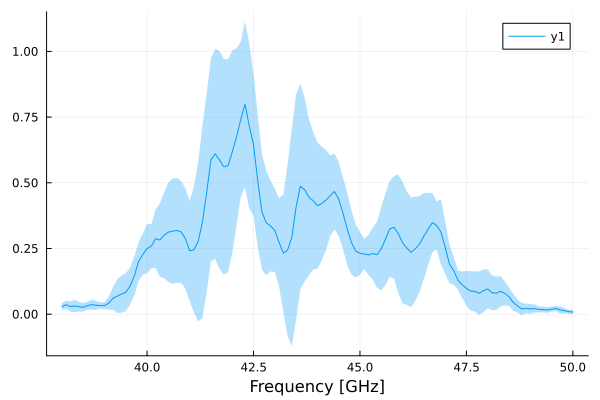

The Strip Instrument Database
Introduction
Every simulator of a scientific experiment needs an «instrument database», i.e., a way to access the specification of the instrument to be simulated. The kind of information stored in this database is the following:
- How many detectors are present in the instrument, and what are their characteristics in terms of noise and placement on the focal plane;
- What is the response of the optical elements, i.e., the so-called beam function;
- Which frequencies can be measured by each detector (the so-called bandpass);
- Ect.
Stripeline implements an instrument database using YAML files and two data structures, Detector and Horn, plus some functions to easily access the information in them.
The following example initializes an object of type InstrumentDB with the values referred to the standard STRIP instrument:
julia> db = InstrumentDB()
InstrumentDB(55 horns, 66 detectors)This command loads the YAML files provided in the Stripeline repository and initializes the db object. As db is a struct, its field can be accessed with the usual dot notation. The two fields in db are focalplane and detectors. They are both dictionaries, associating horn names to Horn objects and detectors IDs to Detector objects, respectively:
julia> db.focalplane["I0"]
Horn I0, module 0 (indigo), STRIP31:
Orientation: [0.0000, 0.0000, 1.0000]
FWHM (X/Y): 0.3470 × 0.3440 °
Spillover: 0.016704 (main), 0.013964 (sub)
Cross-polarization: 44.53 dB
Directivity: 54.76 dBi
Ellipticity: 1.0080
julia> db.detectors[2]
Detector STRIP02 (Q band):
Center frequency: 43.39 ± 0.13 GHz
Bandwidth: 7.58 ± 0.87 GHz
Noise temperature: 31.5 ± 3.92 K
Knee frequency: 90.0 ± 40.0 mHz (Q), 70.0 ± 40.0 mHz (U)A number of high-level functions ease the access of the fields in a InstrumentDB object:
detectorreturns aDetectorstructure, containing the details of a polarimeter;bandpassreturns aBandshapeInfostructure, containing the shape of the bandpass of a detector;spectrumreturns aSpectrumInfofknee_hzreturns the knee frequency of the 1/f noise for the I, Q, and U signals, adapted to the brightness temperature of the load being observed by the detector;tnoisereturns the noise temperature for the I, Q, and U components.
The structure Detector uses three structures to organize its data in a hierarchical way:
All these structures know how to show themselves on the REPL:
julia> db.detectors[2].bandshape
Bandshape:
Center frequency: 43.39 ± 0.13 GHz
Bandwidth: 7.58 ± 0.87 GHz
Frequency range: [38.00, 50.00] GHz (121 points)
Test ID: [355, 356]
Analysis ID: 89
julia> db.detectors[2].spectrum
Noise spectrum:
Slope: I = 0.8585 ± 0.0000, Q = 0.6420 ± 0.0030, U = 0.3680 ± 0.0030
Knee frequency: I = 0.0 ± 0.0 mHz, Q = 90.0 ± 40.0 mHz, U = 70.0 ± 40.0 mHz
White noise: Q = 5.0 ± 1.0 mK^2 Hz, U = 2.6 ± 0.6 mK^2 Hz
System brightness temperature: 20.0 K
Test ID: 357
Analysis ID: 15
julia> db.detectors[2].tnoise
Noise temperature:
Tnoise: 31.5 ± 3.9 K
Estimates: [26.7, 27.1, 27.6, 28.2, 30.1, 31.1, 32.0, 33.6, 34.0, 35.1, 36.2, 39.7] K
Test IDs: []
Analysis IDs: [105, 106]Some of them have the ability to be plotted using Plots.jl:
julia> using Plots
julia> plot(db.detectors[2].bandshape)
Plot{Plots.GRBackend() n=1}
For more information about the fields in the structures listed above, as well as their meaning, keep reading.
Structures
Stripeline.InstrumentDB — TypeSTRIP instrument database
The "database" contains information about feed horns and polarimeters:
The field
focalplaneis a dictionary (mapping) associating the string identifying a horn (e.g.,I0) with aHornstructure;The field
detectorsis a dictionary associating the ID of the polarimeter (e.g., 2 stands forSTRIP02) with aDetectorstructure.
You should usually create an object of this kind using the default constructor, which parses a set of YAML files containing the real parameters of the instrument.
Examples
julia> db = InstrumentDB();
julia> print("Number of horns in the database: $(length(keys(db.focalplane)))")
Number of horns in the database: 55
julia> print("Number of polarimeters in the database: $(length(keys(db.detectors)))")
Number of polarimeters in the database: 66Visualization
You can produce a table describing the contents of the instrument database using show and passing text/markdown as MIME type:
db = InstrumentDB()
show(stdout, MIME("text/markdown"), db)The table can be converted to other formats (HTML, LaTeX, Microsoft Word, …) using commonly-available tools, e.g., Pandoc.
Stripeline.Horn — TypeInformation about a STRIP horn
This structure holds a number of parameters relative to each feed horn in the STRIP focal plane.
You should initialize Horn objects via the InstrumentDB constructor, which loads their definition from a STRIP instrument database in YAML format.
| Field | Type | Meaning |
|---|---|---|
name | String | Name of the horn, e.g., I0 |
id | Int | Unique number of the horn, starting from 1 |
polid | Int | Unique ID of the polarimeter associated with the horn |
polarizerid | Int | Unique ID of the polarizer+OMT associated with the horn |
moduleid | Int | Number of the horn within the module, from 0 to 6 |
color | String | Name of the color associated with the module |
orientation | Array{Float64} | 3D vector containing the orientation of the horn in the sky |
fwhm_x_deg | Float64 | FWHM of the beam along the X axis, in degrees |
fwhm_y_deg | Float64 | FWHM of the beam along the Y axis, in degrees |
main_spillover | Float64 | Main reflector spillover |
sub_spillover | Float64 | Sub-reflector spillover |
xpd_db | Float64 | Cross-polarization, in dB |
directivity_dbi | Float64 | Directivity, in dBi |
ellipticity | Float64 | Ellipticity |
Stripeline.Detector — TypeInformation about a STRIP detector
This structure holds information about a STRIP polarimeter.
You should initialize Detector objects via the InstrumentDB constructor, which loads their definition from a local STRIP instrument database.
| Field | Type | Meaning |
|---|---|---|
id | Int | Integer ID of the polarimeter, e.g., 2 for STRIP02 |
name | String | Full name of the polarimeter, e.g., STRIP02 |
band | String | Band: it can either be Q or W |
bandshape | BandshapeInfo | Information about the bandpass response |
spectrum | SpectrumInfo | Information about the noise spectrum (white noise and 1/f noise) |
tnoise | NoiseTemperatureInfo | Information about the noise temperature |
Stripeline.BandshapeInfo — TypeBandshapeInfoInformation about the spectral band response of a polarimeter.
| Field | Type | Meaning |
|---|---|---|
center_frequency_hz | Float64 | Estimate for the center frequency, in Hz |
center_frequency_err_hz | Float64 | Estimated error on the center frequency, in Hz |
bandwidth_hz | Float64 | Estimated bandwidth, in Hz |
bandwidth_err_hz | Float64 | Estimated error on the bandwidth, in Hz |
lowest_frequency_hz | Float64 | Lowest frequency of the bandshape in response, in Hz |
highest_frequency_hz | Float64 | Highest frequency of the bandshape in response, in Hz |
num_of_frequencies | Int | Number of samples in response |
bandshape | Array{Float64,1} | Profile of the bandshape (pure numbers) |
bandshape_error | Array{Float64,1} | Estimated error on the profile of the bandshape |
test_id | Array{Int,1} | ID of the unit-level test used to characterize the bandshape |
analysis_id | Int | ID of the unit-level analysis used to characterize the bandshape |
You can plot a BandshapeInfo object by importing Plots and using plot:
db = InstrumentDB()
plot(bandpass(db, "I0"), show_error = true)The following keywords are recognized in the call to plot:
show_error(default:true): include an error bar.show_centerfreq(default:false): include a vertical bar showing the position of the center frequency
Stripeline.bandshape — Functionbandshape(bandinfo::BandshapeInfo) -> Tuple{Array{Float64, 1}, Array{Float64, 1}}
bandshape(db::InstrumentDB, polid::Integer) -> Tuple{Array{Float64, 1}, Array{Float64, 1}}
bandshape(db::InstrumentDB, horn_name::AbstractString) -> Tuple{Array{Float64, 1}, Array{Float64, 1}}Return a pair (ν_hz, B, Berr) containing the shape of the bandpass in bandinfo (first form), or the bandpass taken from the instrument database (second and third form). The two elements of the tuple (ν_hz, B) are two arrays of the same length containing the frequencies (in Hz) and the bandpass response at the same frequency (pure number), and they are suitable to be plotted, like in the following example:
db = InstrumentDB()
x, y, err = bandshape(db, "G2")
plot(x, y, ribbon=(err, err)) # Plot the bandpass and the error barHowever, it is easier just to use plot on a BandshapeInfo object.
Stripeline.SpectrumInfo — TypeSpectrumInfoInformation about the noise spectrum of the output of a polarimeter.
| Field | Type | Meaning |
|---|---|---|
slope_i | Float64 | The slope ($\alpha$) of the 1/f component of the noise in the I signal |
slope_i_err | Float64 | Error associated with the value of slope_i |
slope_q | Float64 | Same as slope_i, but for the Q signal |
slope_q_err | Float64 | Error associated with the value of slope_q |
slope_u | Float64 | Same as slope_i, but for the U signal |
slope_u_err | Float64 | Error associated with the value of slope_u |
fknee_i_hz | Float64 | Knee frequency of the I signal, in Hz |
fknee_i_err_hz | Float64 | Error associated with the value of fknee_i_hz |
fknee_q_hz | Float64 | Knee frequency of the Q signal, in Hz |
fknee_q_err_hz | Float64 | Error associated with the value of fknee_q_hz |
fknee_u_hz | Float64 | Knee frequency of the U signal, in Hz |
fknee_u_err_hz | Float64 | Error associated with the value of fknee_u_hz |
wn_i_k2_hz | Float64 | White noise level for the I signal, in K^2 Hz |
wn_i_err_k2_hz | Float64 | Error associated with the value of wn_i_k2_hz |
wn_q_k2_hz | Float64 | White noise level for the Q signal, in K^2 Hz |
wn_q_err_k2_hz | Float64 | Error associated with the value of wn_q_k2_hz |
wn_u_k2_hz | Float64 | White noise level for the U signal, in K^2 Hz |
wn_u_err_k2_hz | Float64 | Error associated with the value of wn_u_k2_hz |
i_fit_parameters_k2_hz | Vector{Float32} | Fit coefficients for the I spectrum in K²/Hz, or nothing |
q_fit_parameters_k2_hz | Vector{Float32} | Fit coefficients for the Q spectrum in K²/Hz, or nothing |
u_fit_parameters_k2_hz | Vector{Float32} | Fit coefficients for the U spectrum in K²/Hz, or nothing |
pwr_cov_matrix_k2 | Symmetric{4} | Covariance matrix of the signals Q1, Q2, U1, U2 (PWR) in K² or nothing |
dem_cov_matrix_k2 | Symmetric{4} | Covariance matrix of the signals Q1, Q2, U1, U2 (DEM) in K² or nothing |
iqu_cov_matrix_k2 | Symmetric{3} | Covariance matrix of I = ∑PWR / 4, Q = (Q1 + Q2) / 2, U = (U1 + U2) / 2 |
load_temperature_k | Float64 | System brightness temperature used during the tests (in K) |
test_id | Int | ID of the unit-level test used to characterize the bandshape |
analysis_id | Int | ID of the unit-level analysis used to characterize the bandshape |
You can quickly plot the theoretical shape of the noise power spectrum using plot on a SpectrumInfo object.
Stripeline.NoiseFitParams — TypeNoiseFitParams = SVector{3, Float32}An array of three parameters describing the PSD of the noise for some output.
Stripeline.NoiseTemperatureInfo — TypeNoiseTemperatureInfoInformation about the noise temperature of a polarimeter. This structure is used for the field tnoise of the Detector struct.
| Field | Type | Meaning |
|---|---|---|
tnoise_k | Float64 | Noise temperature computed from tnoise_values_k, in K |
tnoise_err_k | Float64 | Error associated with tnoise_k, computed from tnoise_values_k |
test_ids | Array{Int,1} | List of unit-level test IDs used to estimate the noise temperature |
analysis_ids | Array{Int,1} | List of unit-level analysis report IDs used to estimate the noise temperature |
values_k | Array{Float64,1} | List of noise temperatures estimated from the tests |
Stripeline.oof_noise_k2_hz — Functionoof_noise_k2_hz(fit_coeffs::Union{Vector{Float64}, Nothing}, nu)Compute the amount of power (in K²/Hz) associated with 1/f noise, given a set of fitting coefficients for the function $f(\nu) = \nu^a e^b + e^c$. This is the same as noise_k2_hz, but it returns the 1/f part only.
The fitting coefficients are usually taken from a SpectrumInfo structure, namely in the three fields i_fit_parameters_k2_hz, q_fit_parameters_k2_hz, and u_fit_parameters_k2_hz.
Stripeline.white_noise_k2_hz — Functionwhite_noise_k2_hz(fit_coeffs::Union{Vector{Float64}, Nothing}, nu)Compute the amount of power (in K²/Hz) associated with white noise, given a set of fitting coefficients for the function $f(\nu) = \nu^a e^b + e^c$. This is the same as noise_k2_hz, but it returns the white noise part only.
The fitting coefficients are usually taken from a SpectrumInfo structure, namely in the three fields i_fit_parameters_k2_hz, q_fit_parameters_k2_hz, and u_fit_parameters_k2_hz.
Stripeline.noise_k2_hz — Functionnoise_k2_hz(fit_coeffs::Union{Vector{Float64}, Nothing}, nu)Compute the amount of power (in K²/Hz) associated with 1/f plus white noise, given a set of fitting coefficients for the function $f(\nu) = \nu^a e^b + e^c$. This is the kind of function fitted by the code that analyzed the unit-test data.
The fitting coefficients are usually taken from a SpectrumInfo structure, namely in the three fields i_fit_parameters_k2_hz, q_fit_parameters_k2_hz, and u_fit_parameters_k2_hz.
To compute the 1/f and white noise parts separately, you can use oof_noise_k2_hz and white_noise_k2_hz.
High-level access functions
Stripeline.detector — Functiondetector(db::InstrumentDB, polid::Integer) -> Detector
detector(db::InstrumentDB, horn_name::AbstractString) -> DetectorReturn a Detector structure, taken from the instrument database. If the form with polid is used, polid is the progressive number of the polarimeter; e.g., for STRIP02, polid == 2. In the second form, you pass the string identifying the horn on the focal plane, e.g., I0, W3, etc.
db = InstrumentDB()
pol1 = detector(db, 16) # Get information about STRIP16
pol2 = detector(db, "V4") # Get information about the detector connected to horn V4Stripeline.bandpass — Functionbandpass(db::InstrumentDB, polid::Integer) -> BandshapeInfo
bandpass(db::InstrumentDB, horn_name::AbstractString) -> BandshapeInfoReturn a pair (ν_hz, B) containing the bandpass B for the horn with the specified ID (polid) or associated to some horn (horn_name). To understand how polid and horn_name work, see the documentation for detector.
The two elements of the tuple (ν_hz, B) are two arrays of the same length containing the frequencies (in Hz) and the bandpass response at the same frequency (pure number).
db = InstrumentDB()
x, y = bandpass(db, "G2")
plot(x, y) # Plot the bandpassSee also bandshape.
Stripeline.spectrum — Functionspectrum(db::InstrumentDB, polid::Integer) -> SpectrumInfo
spectrum(db::InstrumentDB, horn_name::AbstractString) -> SpectrumInfoReturn a SpectrumInfo object, taken from the instrument database. The meaning of the parameters polid and horn_name is explained in the documentation for detector.
Stripeline.fknee_hz — Functionfknee_hz(db::InstrumentDB, polid::Integer; tsys_k = missing) -> Tuple{Float64, Float64, Float64}
fknee_hz(db::InstrumentDB, horn_name::AbstractString; tsys_k = missing) -> Tuple{Float64, Float64, Float64}Return the knee frequency for the selected detector, taken from the instrument database. The meaning of the parameters polid and horn_name is explained in the documentation for detector.
If tsys_k is specified, the system temperature is rescaled to the desired temperature of the load feeding the polarimeter, so that the 1/f component of the noise remains unchanged but the white noise plateau raises/lowers by an appropriate amount. Otherwise, the function returns the raw frequency taken from the instrument database.
Stripeline.tnoise — Functiontnoise(db::InstrumentDB, polid::Integer) -> NoiseTemperatureInfo
tnoise(db::InstrumentDB, horn_name::AbstractString) -> NoiseTemperatureInfoReturn a NoiseTemperatureInfo object, taken from the instrument database. The meaning of the parameters polid and horn_name is explained in the documentation for detector.
Loading custom databases
It is not needed to load the default instrument database, as Stripeline provides a number of additional functions to build mock databases from dictionaries.
Stripeline.defaultdbfolder — Functiondefaultdbfolder()Return a string containing the (local) full path to the YAML files containing the reference instrument DB.
Stripeline.parsefpdict — Functionparsefpdict(fpdict)Return a dictionary associating an horn name (e.g., I0) to a Horn object containing information about some horn in the STRIP focal plane. The information are parsed from fpdict, which should be a dictionary loaded from a YAML file. The default YAML file to be used is located in the folder returned by defaultdbfolder and is usually named strip_focal_plane.yaml
Stripeline.parsedetdict — Functionparsedetdict(detdict)Return a dictionary associating an integer number to a Detector object containing information about the STRIP detector with the corresponding number. The information are parsed from detdict, which should be a dictionary loaded from a YAML file. The default YAML file to be used is located in the folder returned by defaultdbfolder and is usually named strip_detectors.yaml